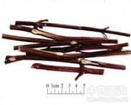

紫苏梗

拼音
Zǐ Sū Gěnɡ
别名
苏梗
来源
本品为唇形科植物紫苏Perilla frutescens （L.）Britt. 的干燥茎。秋季果实成熟后采割，除去杂质，晒干，或趁鲜切片，晒干。
生境分布
产湖北、江苏、河南、四川、广西、山东、广东、浙江、河北、山西等地。
药材特点
植物形态详"紫苏叶"条。
性状
本品呈方柱形，四棱钝圆，长短不一，直径0.5～1.5cm。表面紫棕色或暗紫色，四面有纵沟及细纵纹，节部稍膨大，有对生的枝痕和叶痕。体轻，质硬，断面裂片状。切片厚2～5mm，常呈斜长方形，木部黄白色，射线细密，呈放射状，髓部白色，疏松或脱落。气微香，味淡。
性味
辛，温。
功能主治
理气宽中，止痛，安胎。用于胸膈痞闷，胃脘疼痛，嗳气呕吐，胎动不安。
用法用量
5～9g。
化学成分
紫苏地上部分含紫苏酮（pe-rillaketone)，异白苏烯酮（isoegomaketone)，白苏烯酮（egomaketone)，紫苏为然（perillene)[1]亚麻酸乙酯（ethyllinolenate)，亚麻酸（linolenic acid) 及β-谷甾醇（β-sitosterol)[2]。
药理作用
1：孕激素样作用 根据孕酮可以使雌激素激发的动物子宫内膜碳酸酐酶活性增加：并与孕酮剂量成线性关系的效应，在连续3d肌注已烯雌酚的基础上，给子紫苏梗注射液0.1g，0.2g，0.4g和0.6g（生药），腹腔注射，连续4d，其作用与孕酮相似，使小鼠子宫内膜碳酸酐酶的活性剂量相关性显着增加，说明其治疗先流产及安胎的机制也与孕酮相同
2：此外：紫苏梗也能使小鼠子宫内膜较明显增厚，表明其与孕酮一样，也能促进子宫内膜腺体的增长[1]
3：干扰素诱导作用 以水从回苏叶和梗中提取的干扰素诱导剂：在家兔及兔睥、骨髓和淋巴结细胞悬液的试验中，均证实有干扰素诱导作用[2]
摘录
《中国药典》